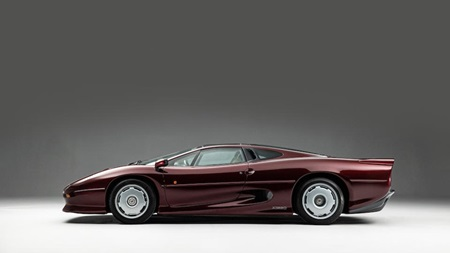
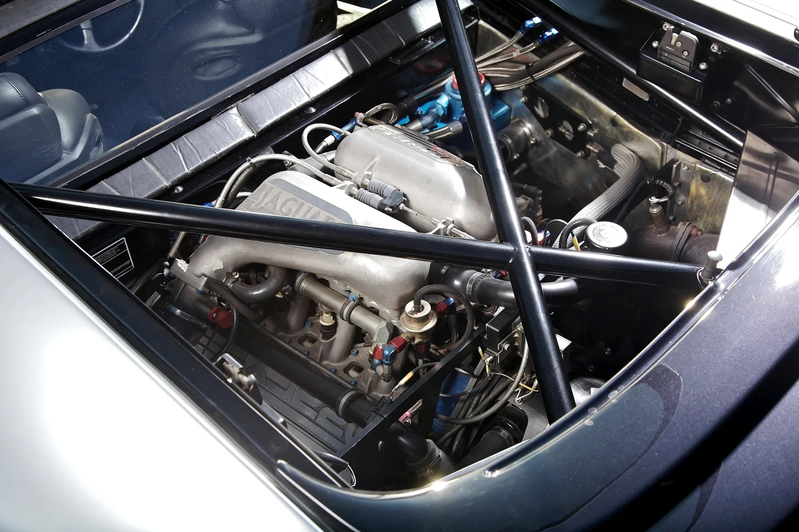
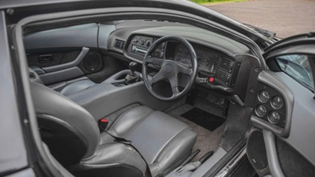
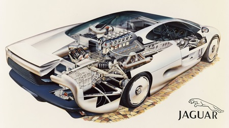

Introduction
As the saying goes, if you have to ask the price, you can't afford it. Well, we still have to ask. Any discussion of the Jaguar XJ220 must be prefaced with a price. At £415,000 ($705,500), It is the world's most expensive production car (among those actually being delivered to buyers). The XJ220 is also the world's fastest production car. Back in May 1991, it hit 212 mph at Ford's Fort Stockton proving ground in Texas. Earlier this year, it turned 217 mph at Nardo in Italy. Text from Car and Driver




Technical information
The five-speed transaxle is specially made by four-wheel-drive specialists FF Developments and includes a viscous coupling as a limited-slip device. The clutch is heavy, and the gearshift demands firm, positive movement. The same applies to the brakes: massive Group C cross-drilled discs with four-pot calipers without power assistance. There is no power for the steering either, though at anything faster than walking pace most drivers would not feel the need for assistance. The XJ220's handling response is as accurate as a well-prepared race car's. It's beautifully balanced, with just a little understeer for those too timid to get the power on early through a corner. Those huge rear tires, specially developed by Bridgestone for the XJ220, really do their business. Text from Car and Driver
Interior
As I swung myself into chassis 004 (one of Jaguar's early prototypes) and shut the long door, I became instantly cocooned in the cabin, in a deceivingly low driving position with a steeply raked panoramic windscreen to see out of. However, despite this encapsulation, the cabin proved to be more than roomy enough with plenty of shoulder space, a deep footwell to fit the full height of those who might ordinarily struggle to squeeze into cars like these, and to literally top it off, a glass roof bringing in lots of light. Text from Petrolicious


https://www.vitadistile.com/2014/11/24/twr-non-tvr/jaguar-xj220-prototype/
History
The mid-engined, V-12-powered concept car that became the XJ220 made Jaguar the toast of the 1988 Birmingham motor show. It generated enough interest for Jaguar to ask its affiliate company JaguarSport to engineer it for limited production. In December 1989, JaguarSport announced it would build the XJ220, but in a less potent form, with a 3.5-liter twin-turbocharged V-6 engine driving the rear wheels. No more than 350 would be delivered to selected buyers who plunked down an $80,000 deposit against a £290,000 ($484,000) price tag. Text from Car and Driver